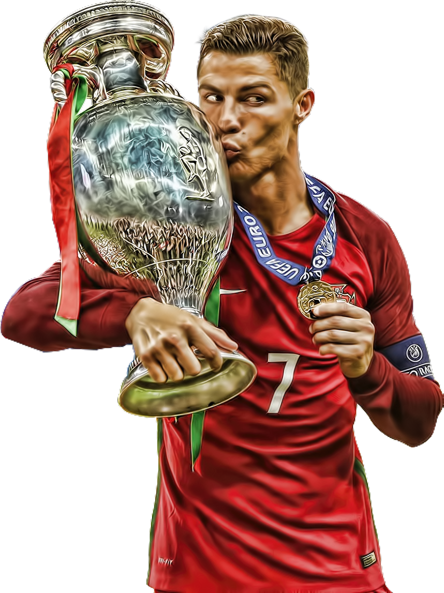

Ronaldo
Al nassr
manchester united
real madrid
juventus
Cristiano Ronaldo dos Santos Aveiro GOIH ComM is a Portuguese professional footballer who plays as a forward for and captains both Saudi Pro League club Al Nassr and the Portugal national team.Ronaldo is widely regarded as one of the greatest footballers of all time and has a huge following of fans around the world. He is known for his exceptional dribbling skills, incredible speed, and his exceptional goalscoring ability. Ronaldo began his professional career with Sporting CP at age 17 in 2002 and signed for Manchester United a year later. He won three back-to-back Premier League titles in 2006-07, 2007-08, and 2008-09. In 2007-08, Ronaldo helped United win the UEFA Champions League. In 2008-09, he won his first World Cup in December 2008 and his first Ballon d'Or. At one point Ronaldo was the most expensive professional footballer of all time, after moving from Manchester United to Real Madrid for approximately £80 m in July 2009. In 2009, Ronaldo was included in the "World Player of the Decade 2000s", ranking third behind Lionel Messi (who came second) and Ronaldinho (who came first). He won his first trophy with Real Madrid in 2011, the 2010-11 Copa del Rey. In the next season, he won the club's first La Liga title, the 2011-12 La Liga. In the 2012-13 season, he won the Supercopa de España. In the next season, the 2013-14 season, he won his second Ballon d'Or. Then he won the Copa del Rey, and he also won his second Champions League with a record 17 goals. The following year, Ronaldo won the Ballon d'Or again, along with his second FIFA Club World Cup in December 2014. In 2016, Ronaldo won his third Champions League, and scored the winning penalty in the final against Atlético Madrid. He won his fourth Ballon d'Or the next season, his second La Liga title for the first time in five years, another Champions League, and his second Club World Cup. Ronaldo's last season with Real Madrid was the 2017-18 season, where he won his fifth Ballon d'Or in 2017, and also won his fifth Champions League and scored two goals in the final against Juventus. With his third consecutive Champions League, he became the first player to win the UEFA Champions League five times.[16] He would later go on to transfer to Juventus in July 2018. Ronaldo left the club holding the record for being the top goal scorer in Real Madrid's history and remaining the only player in La Liga's history to score 30 or more goals in six consecutive seasons. Ronaldo began his career with Portugal at age 18. He scored his first goal at UEFA Euro 2004 and helped Portugal reach the final, although they lost to Greece 1-0. The first World Cup he played at was the 2006 FIFA World Cup. He scored a goal and helped Portugal earn fourth place. Two years later, he became Portugal's full captain. Since then, he has appeared at four Euro's: 2008, 2012, 2016, and 2020. He has also appeared at three World Cups: 2014, 2018, and 2022 FIFA World Cup. Cristiano Ronaldo dos Santos Aveiro was born in Funchal, Madeira Islands in early 1985 to Maria Dolores dos Santos and José Dinis Aveiro.[18] He has one brother named Hugo, and two sisters named Katia and Elma.[19] Ronaldo was diagnosed with a racing heart (Tachycardia) at age 15 in 2000. In 1997, 12-year-old Ronaldo went on a trial with Sporting CP.[20] He impressed the club enough to be signed for £1,500. He then moved from Funchal to Lisbon, to join the Sporting youth academy. In 1999, at age 14 he was expelled from school for throwing a chair at his teacher.
The "flex-direction: column;" stacks the flex items vertically (from top to bottom):